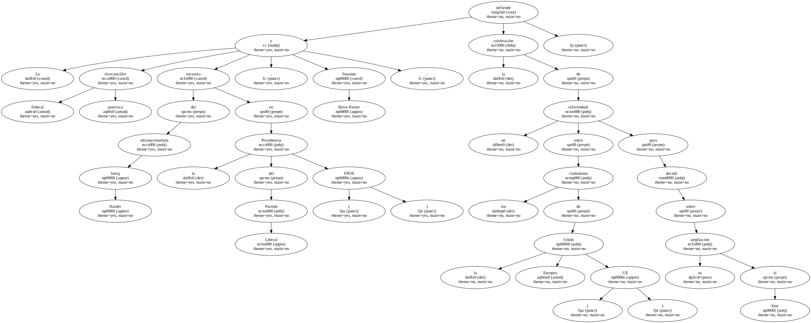
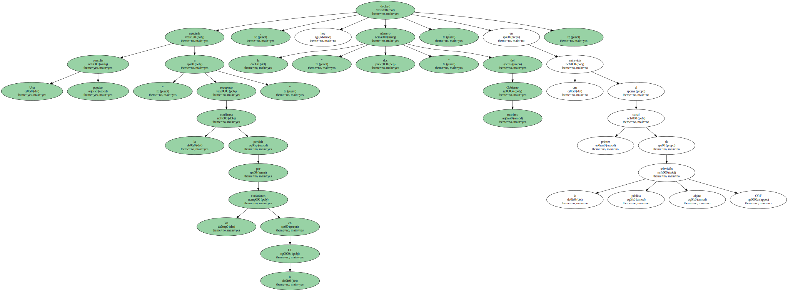
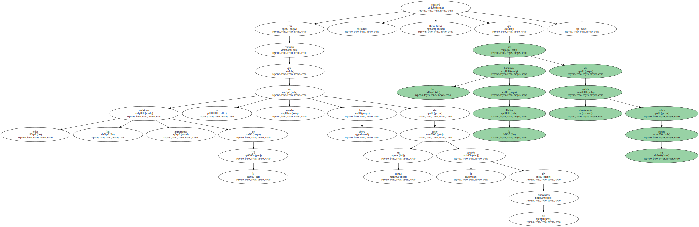
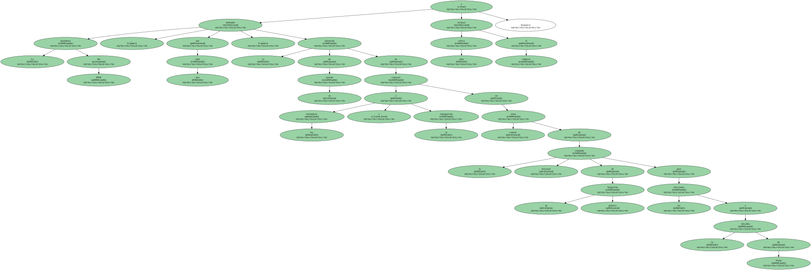
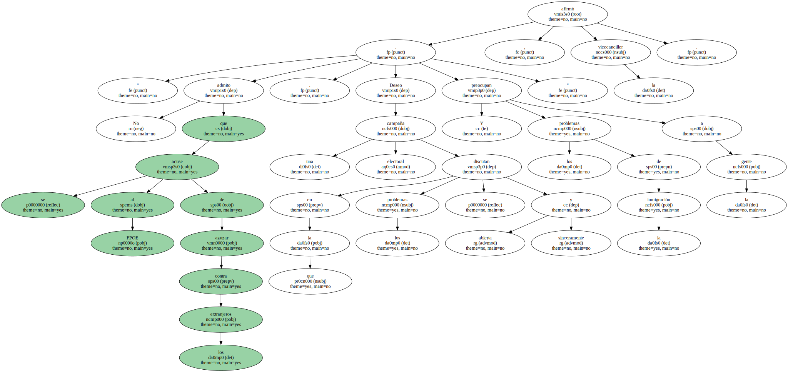
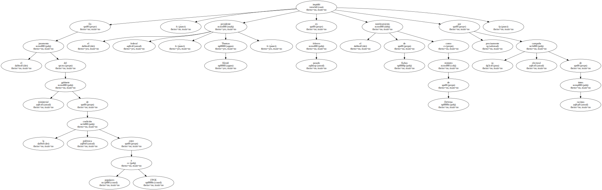

La vicecanciller federal austriaca y sucesora del ultranacionalista Joerg Haider en la Presidencia del Partido Liberal ( FPOE ) , Susanne Riess-Passer , defiende la celebración de un referéndum entre los ciudadanos de la Unión Europea ( UE ) para decidir sobre su ampliación al Este.
Una consulta popular ayudaría " a recuperar la confianza perdida por los ciudadanos en la UE " , declaró hoy la " número dos " del Gobierno austriaco , en una entrevista al primer canal de la televisión pública alpina ORF.
Tras comentar que todas las decisiones importantes de la UE se han tomado hasta ahora sin tener en cuenta la opinión de sus ciudadanos , Riess-Passer subrayó que los habitantes de la Unión han de decidir directamente sobre su futuro.
Indicó que el referéndum debería celebrarse no sólo en Austria , sino en todos los Estados miembros , aunque defendió la ampliación de la Unión hacia el este de Europa , siempre que no perjudique a los intereses austriacos.

La presidenta del FPOE defendió , por otro lado , la intención de su partido de convertir a los extranjeros y la inmigración en tema central de la campaña electoral de su formación política para las elecciones a la Alcaldía de Viena y rechazó toda crítica al respecto.
" No admito que se acuse al FPOE de azuzar contra los extranjeros . Deseo una campaña electoral en la que los problemas se discutan abierta y sinceramente . Y los problemas de la inmigración preocupan a la gente " , afirmó la vicecanciller.
Igualmente , defendió la candidatura a la Alcaldía por el FPOE de Hilmar Kabas , quien protagonizó una campaña electoral en la capital austriaca para los comicios generales del año pasado que fue muy criticada , debido a sus contenidos xenófobos.

En el juramento del gabinete ministerial de la polémica coalición entre populares y FPOE , el presidente federal , Thomas Klestil , impidió en febrero pasado el nombramiento de Kabas como ministro de Defensa precisamente por su campaña electoral de tintes racistas.
